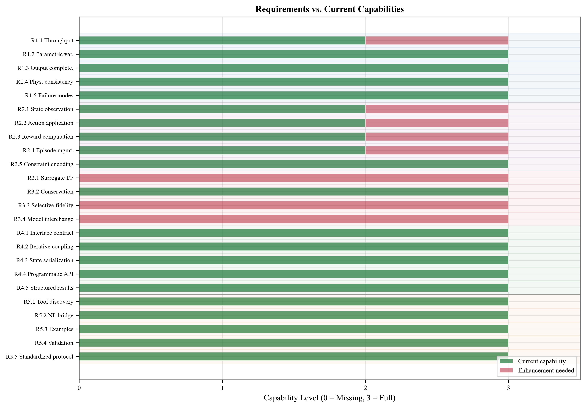
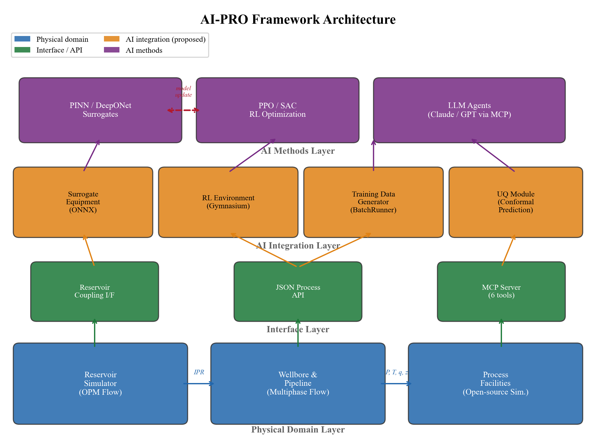
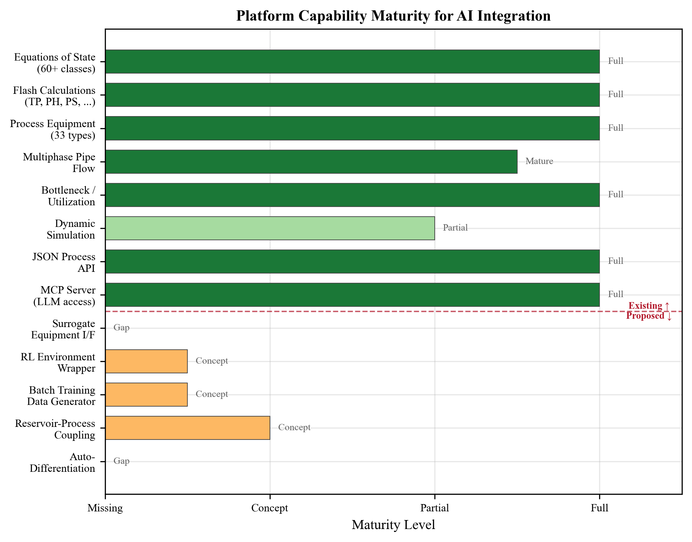
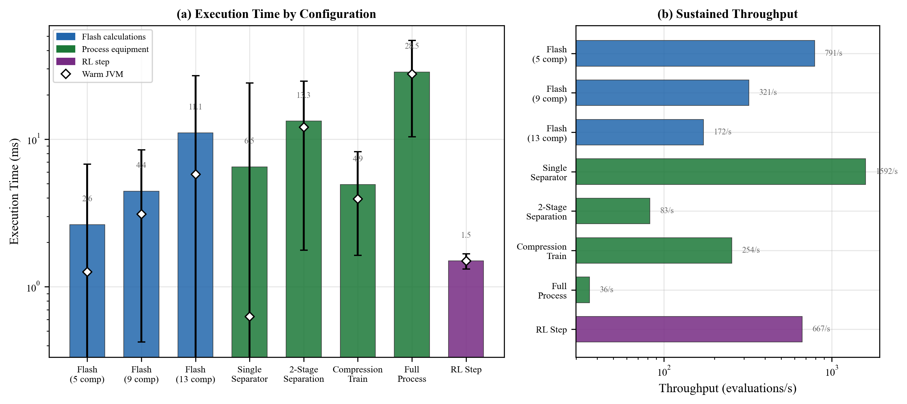
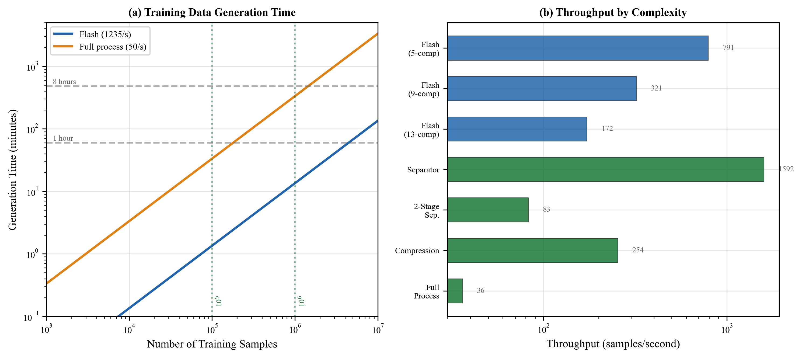
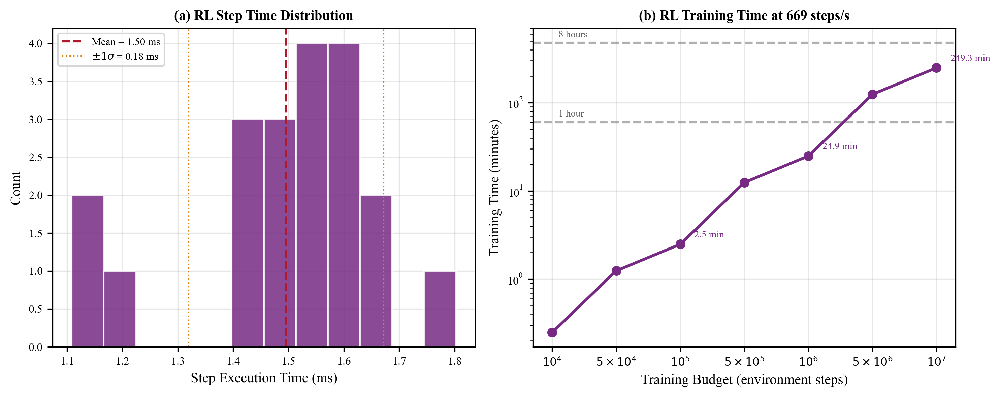
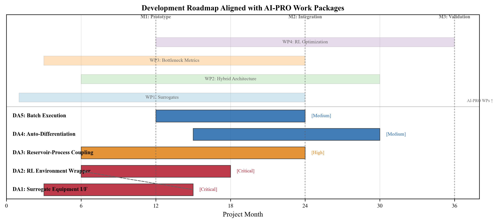
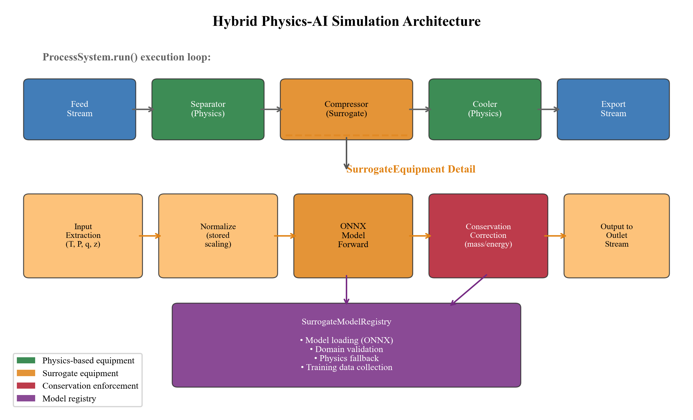
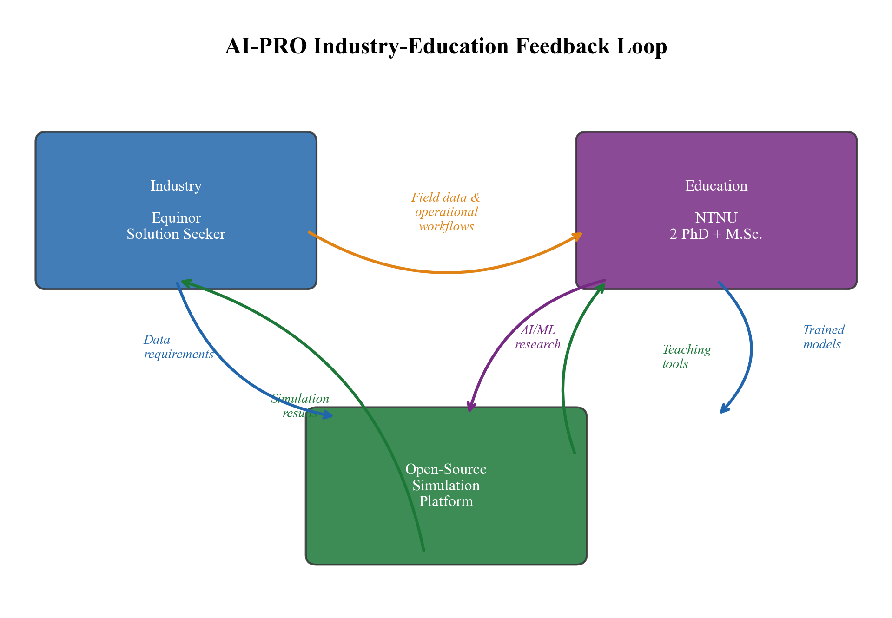
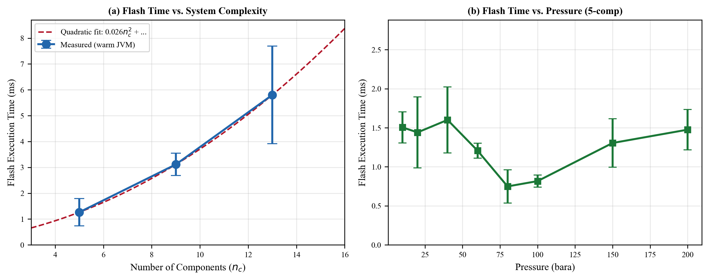

Integrated production optimization for mature petroleum fields requires coupling reservoir, multiphase flow, and process facility models --- but the computational cost of full-physics simulation prohibits real-time optimization and large-scale AI training. Open-source process simulators can serve as the computational backbone for AI-driven frameworks, providing both the rigorous ground truth for surrogate model training and the operational environment for reinforcement learning agents. However, existing simulators were designed for forward simulation, not for the programmatic, high-throughput, bidirectional interaction that AI integration demands. This paper presents a systematic assessment of NeqSim, an open-source thermodynamic and process simulation platform, against the requirements of AI-driven integrated production optimization. We map NeqSim's existing capabilities --- 60 equations of state, 33 equipment types, flash calculations, multiphase pipe flow, equipment capacity constraints, and bottleneck analysis --- to the specific needs of surrogate training, reinforcement learning, digital twin coupling, and agentic AI workflows. We identify five critical development areas: (i) a surrogate equipment interface that allows neural network models to replace physics-based calculations within the simulation loop while preserving thermodynamic consistency; (ii) a Gymnasium-compatible reinforcement learning environment wrapper with formally defined observation, action, and reward spaces; (iii) a standardized reservoir-process coupling interface for receiving inflow data from external reservoir simulators; (iv) automatic differentiation support for gradient-based surrogate training; and (v) high-throughput batch execution for training data generation. For each area, we propose concrete software architecture, interface specifications, and implementation strategies. Computational benchmarking demonstrates that NeqSim executes flash calculations in 1--6 ms and representative process configurations in 1--30 ms (warm JVM), enabling reinforcement learning at 669 steps per second and surrogate training data generation at rates of $10^5$--$10^6$ samples per hour for full process evaluations.
process simulation; AI surrogate integration; reinforcement learning environment; digital twin; bottleneck analysis; open-source software; thermodynamic computation
Production from mature petroleum fields on the Norwegian Continental Shelf (NCS) depends on the coupled behavior of reservoirs, wells, subsea transport systems, and topside process facilities (Howell et al., 2006; Ng et al., 2024). Optimizing this coupled system requires integrated asset models (IAM) that link domain-specific simulators across these boundaries. However, the computational cost of full-physics IAM --- typically minutes to hours per evaluation --- prohibits real-time optimization, large-scale ensemble studies, and closed-loop digital twin operations (Ng et al., 2022).
Artificial intelligence offers a transformative pathway through physics-informed neural network (PINN) surrogates (Raissi et al., 2019; Karniadakis et al., 2021), operator learning frameworks (Lu et al., 2021; Li et al., 2021), and reinforcement learning (RL) agents (Faria et al., 2022; Nasir and Durlofsky, 2024). These methods promise to approximate the integrated simulator at a fraction of the computational cost while preserving physical consistency. In parallel, agentic AI systems powered by large language models (LLMs) offer new modes of human-simulation interaction through standardized protocols such as the Model Context Protocol (MCP) (Anthropic, 2024; Ferrag et al., 2025).
The process facilities domain --- separators, compressors, heat exchangers, valves, pipelines, and their interconnections --- is one of the three pillars of an integrated production model. An open-source process simulator that serves this domain must fulfill multiple roles in an AI-driven framework:
1. Ground-truth generator. The simulator provides the rigorous thermodynamic and process calculations against which surrogate models are trained and validated. 2. RL environment. The simulator serves as the environment in which RL agents observe states, take actions, and receive rewards. 3. Hybrid simulation host. In hybrid architectures, some equipment uses full physics while other equipment uses trained surrogates --- the simulator must accommodate both seamlessly. 4. Digital twin component. The simulator provides the process domain calculations in a modular digital twin that couples with reservoir and flow domain models. 5. Agentic interface. The simulator exposes its capabilities to LLM agents through structured protocols for natural-language-driven simulation.
Existing open-source thermodynamic and process simulation platforms were designed primarily for forward simulation --- computing outlet conditions given inlet conditions and equipment specifications. The requirements of AI integration are qualitatively different: high-throughput batch execution, programmatic state manipulation, gradient information for training, structured observation/action spaces for RL, and surrogate substitution within the simulation loop.
This paper presents a systematic assessment of NeqSim (Equinor and NTNU, 2024), an open-source thermodynamic and process simulation platform, against the requirements of an AI-driven integrated production optimization framework being developed in the AI-PRO project at NTNU. We make the following contributions:
1. We define five functional requirement categories that a process simulator must satisfy for AI integration: surrogate training data generation, RL environment provision, hybrid simulation, digital twin coupling, and agentic AI access (Section 2).
2. We map the current capabilities of NeqSim --- equations of state, flash calculations, process equipment, multiphase flow, equipment utilization metrics, JSON process API, MCP server, and dynamic simulation --- against these requirements, providing a quantitative capability coverage assessment (Section 3).
3. We identify five critical development areas with specific gap descriptions, and for each we propose concrete software architecture, interface specifications, and implementation strategies (Section 4).
4. We present computational benchmarking results that characterize NeqSim's execution performance across representative process configurations, establishing the feasibility of direct-simulation RL and large-scale training data generation (Section 5).
5. We discuss the implications for the broader process systems engineering community and the role of differentiable simulation in future AI-process integration (Section 6).
We categorize the requirements that an AI-driven framework places on its process simulation component into five functional areas.
Training physics-informed surrogates requires large datasets of input-output pairs generated from rigorous simulation. The requirements are:
For RL-based optimization, the simulator must function as a Gymnasium-compatible environment (Brockman et al., 2016; Towers et al., 2023):
reset() to reinitialize the process to a reference state, step(action) to advance one timestep, and render() for visualization.
In hybrid architectures, some equipment units use rigorous physics while others use trained neural network surrogates:
The process simulator is one domain in a multi-domain digital twin:
For LLM-mediated simulation access:
We assess the capabilities of NeqSim against the requirements defined in Section 2. NeqSim provides thermodynamic calculations and process simulation through a Java-based API with Python bindings (Equinor and NTNU, 2024).
NeqSim implements over 60 equation of state (EOS) classes spanning the major families used in petroleum and chemical engineering:
Cubic equations of state. Soave-Redlich-Kwong (SRK) (Soave, 1972) and Peng-Robinson (PR) (Peng and Robinson, 1976) with multiple alpha function variants (Mathias-Copeman, Twu-Coon), volume translation (Peneloux), and advanced mixing rules (Huron-Vidal, PSRK, UMR-PRU). These are the workhorses for natural gas and hydrocarbon systems and execute in microseconds per evaluation.
Association equations of state. Cubic-Plus-Association (CPA) (Kontogeorgis et al., 1996) for systems with hydrogen bonding (water, methanol, MEG, glycols), including electrolyte extensions for brine systems. Essential for accurate water content prediction in gas processing.
Reference equations of state. GERG-2008 (Kunz and Wagner, 2012) for custody-transfer-quality natural gas calculations, Span-Wagner for pure CO$_2$, IAPWS-IF97 for steam, and specialized EOS for hydrogen (Leachman) and LNG (Vega).
SAFT family. PC-SAFT for polymer and associating systems.
The component database contains over 1000 components with pure-component parameters, binary interaction parameters, and physical property correlations. Flash calculations support TP, PH, PS, TV, UV, dew point, bubble point, hydrate, wax, and solid precipitation.
Assessment against R1.4: The thermodynamic engine rigorously enforces thermodynamic consistency through equation-of-state-based calculations. Mass conservation is inherent in the flash algorithm structure. Energy conservation is maintained through enthalpy-balanced flash (PH flash) and equipment energy balance calculations. This satisfies the physical consistency requirement for surrogate training data.
NeqSim provides 33 equipment packages covering the major unit operations in petroleum processing:
| Category | Equipment Types |
|---|---|
| ---------- | ---------------- |
| Separation | 2-phase separator, 3-phase separator, gas scrubber, non-equilibrium separator |
| Compression | Compressor (with performance curves, surge detection), expander |
| Heat transfer | Heater, cooler, shell-and-tube heat exchanger |
| Pressure control | Throttling valve |
| Distillation | Tray column (sequential, damped, inside-out solvers), absorber, stripper |
| Mixing/splitting | Mixer, static mixer, splitter, component splitter |
| Pipelines | Adiabatic pipe, Beggs-and-Brill multiphase, transient two-fluid model |
| Reactors | Gibbs reactor, stoichiometric reactor, CSTR, furnace |
| Pumps | Centrifugal pump |
| Subsea | Subsea well, subsea tree |
| Reservoir | Simple reservoir (material balance tank) |
| Utilities | Recycle convergence, adjuster, set point, flare, ejector, filter, electrolyzer |
Assessment against R1.3: The equipment library provides extensive output metrics: compressor power, polytropic head, efficiency, and surge margin; separator gas velocity, liquid retention time, and weir loading; heat exchanger duty, LMTD, and UA; valve Cv and pressure drop; pipeline pressure profile, liquid holdup, and flow regime. This supports comprehensive training data extraction.
A critical capability for the AI-PRO framework is NeqSim's existing equipment utilization infrastructure:
CapacityConstrainedEquipment interface. Equipment types that have physical capacity limits implement this interface, which provides:
CapacityConstraint class. Models individual constraints with:
getUtilization() returning a ratio (0.0 to 1.0+)isExceeded() testing if capacity is exceededisNearLimit() testing against configurable warning thresholdsgetHeadroom() returning remaining available capacityBottleneckAnalyzer class. Operates on a complete process system to:
BottleneckResult objects with equipment name, utilization percentage, constraint type, and debottlenecking recommendationProcessSystem-level integration. The process system provides:
getCapacityUtilizationSummary() returning a plant-wide utilization mapgetBottleneck() returning the primary system bottleneckEquipment types with implemented capacity strategies include separators (gas velocity, liquid retention time), compressors (power, surge margin, speed range), pumps (NPSH, power), heat exchangers (duty, heat transfer area), valves (Cv), and pipelines (velocity, erosion limits).
Assessment against R2.1, R2.3: The utilization framework directly provides the structured observation vector and reward signal components needed for RL-based optimization. Equipment utilization percentages form a natural observation space, and the BottleneckAnalyzer provides reward signal components that incentivize balanced utilization across the plant.
ProcessSystem class. The central flowsheet orchestrator provides:
getUnit(name)getAllElements() returning equipment, controllers, and measurement devicesconnect(source, target, type, label)copy() for parallel evaluations
JSON Process Builder. ProcessSystem.fromJsonAndRun(jsonString) accepts a declarative JSON specification of the fluid, streams, and equipment hierarchy and returns a SimulationResult object with:
ProcessSystem (for further programmatic access)Assessment against R4.4, R4.5: The programmatic API and JSON interface satisfy the digital twin coupling requirements. The structured error reporting with remediation hints is particularly valuable for automated error handling in AI middleware.
NeqSim includes a production-ready Model Context Protocol server that exposes six tools:
| Tool | Function |
|---|---|
| ------ | ---------- |
runFlash | Thermodynamic flash calculation (TP, PH, PS, dew, bubble, hydrate) |
runProcess | Process simulation from JSON specification |
validateInput | Pre-execution input validation |
searchComponents | Component database search |
getExample | Example JSON templates for 15+ process types |
getSchema | Input/output JSON schemas |
The server ships as a self-contained JAR (~55 MB), uses STDIO transport for integration with VS Code, Claude Desktop, and other MCP clients, and supports automatic tool discovery where LLMs learn the API from embedded schemas and examples.
Assessment against R5.1--R5.5: The MCP server satisfies all agentic AI access requirements. Tool discovery, example-driven learning, input validation, and standardized protocol support are all implemented and tested (111 test cases in the test suite).
NeqSim supports transient simulation through:
ProcessSystem.runTransient(dt, UUID): Advances the process by one timestep of duration dt.addController(tag, controller).
Assessment against R2.4: The transient execution capability provides the step() semantics needed for RL environments. The auto-instrumentation through DynamicProcessHelper provides a mechanism for converting any steady-state process into a dynamically controllable environment.
NeqSim provides three levels of pipeline modeling:
PipeBeggsAndBrills: Steady-state multiphase pressure drop using the Beggs and Brill correlation (Beggs and Brill, 1973) with formation temperature gradient support.TwoFluidPipe: Transient two-fluid model with 7 conservation equations, multiple boundary condition types, terrain following, and slug tracking.LoopedPipeNetwork: Looped network solver using the Hardy Cross method (Cross, 1936) with source/sink/junction nodes, loop detection, and iterative convergence.Assessment against R1, R4: These capabilities cover the wellbore-to-process transport domain within the integrated model, providing the multiphase flow calculations needed at the interface between reservoir/well and process domains.
Table 1 summarizes the coverage assessment across all requirement categories.
Table 1. Capability coverage matrix. ■ = fully covered, ◧ = partially covered, □ = gap.
| Requirement | ID | Coverage | Notes |
|---|---|---|---|
| --- | --- | --- | --- |
| R1: Surrogate training | |||
| Throughput ($10^5$+ evaluations) | R1.1 | ◧ | Single-threaded; batch API needed |
| Parametric variation | R1.2 | ■ | Full programmatic control of all inputs |
| Output completeness | R1.3 | ■ | Equipment metrics, utilization, stream properties |
| Physical consistency | R1.4 | ■ | EOS-enforced conservation |
| Failure mode coverage | R1.5 | ■ | Capacity constraints, surge detection |
| R2: RL environment | |||
| State observation | R2.1 | ◧ | Data available; structured observation vector not wrapped |
| Action application | R2.2 | ◧ | Setpoints adjustable; no action space definition |
| Reward computation | R2.3 | ◧ | Utilization + production data available; reward function not formalized |
| Episode management | R2.4 | ◧ | runTransient + copy(); no Gymnasium wrapper |
| Constraint encoding | R2.5 | ■ | Capacity constraints with limit checking |
| R3: Hybrid simulation | |||
| Surrogate equipment interface | R3.1 | □ | Key gap --- no surrogate equipment class |
| Conservation enforcement | R3.2 | ■ | Stream-level mass/energy balance |
| Selective fidelity | R3.3 | □ | No per-unit fidelity switching |
| Model interchange (ONNX) | R3.4 | □ | No ONNX runtime integration |
| R4: Digital twin coupling | |||
| Interface variable contract | R4.1 | ■ | Stream objects carry full thermodynamic state |
| Iterative coupling | R4.2 | ■ | Programmatic run() with boundary condition setting |
| State serialization | R4.3 | ■ | Java serialization + copy() |
| Programmatic API | R4.4 | ■ | Complete Java API with Python bindings |
| Structured result reporting | R4.5 | ■ | JSON results with error codes and remediation |
| R5: Agentic AI | |||
| Tool discovery | R5.1 | ■ | MCP server with auto-discovery |
| Natural language bridge | R5.2 | ■ | MCP tools accept structured requests |
| Example-driven learning | R5.3 | ■ | 15+ embedded examples |
| Validation before execution | R5.4 | ■ | validateInput tool |
| Standardized protocol | R5.5 | ■ | MCP (STDIO transport) |
Coverage summary: 18 of 25 requirements fully covered (72%), 5 partially covered (20%), 2 gaps (8%). The gaps cluster in the hybrid simulation category (R3), which represents the primary development frontier.
Based on the capability assessment in Section 3, we identify five development areas ordered by priority for the AI-PRO framework.
Gap description. NeqSim has no mechanism for replacing a physics-based equipment unit with a trained neural network surrogate while maintaining the same interface contract. This prevents hybrid simulation architectures where computationally expensive units (e.g., distillation columns, rigorous flash) are replaced by fast surrogates while simple units (e.g., mixers, splitters) retain full physics.
Proposed solution: SurrogateEquipment class.
A new class implementing the existing ProcessEquipmentInterface that wraps a trained neural network model:
Class: SurrogateEquipment extends ProcessEquipmentBaseClass
Constructor:
SurrogateEquipment(name, modelPath, inputMapping, outputMapping)
Key methods:
run():
1. Extract input features from inlet stream(s):
x = [T_in, P_in, flow_in, z_1, z_2, ..., z_nc, params]
2. Normalize inputs using stored scaling factors
3. Evaluate neural network: y = model.forward(x)
4. De-normalize outputs
5. Set outlet stream properties from y
6. Enforce mass balance: adjust outlet composition/flow
7. Compute energy residual for conservation check
setModel(modelPath): Load ONNX or serialized model
getModelMetadata(): Return training domain, accuracy metrics
isPhysicallyValid(): Check output against thermodynamic bounds
Interface contract. The SurrogateEquipment must satisfy the same ProcessEquipmentInterface that all physics-based equipment implements: getInletStreams(), getOutletStreams(), run(), getName(). This ensures transparent substitution --- the ProcessSystem executes surrogates identically to physics-based units, and the BottleneckAnalyzer can still compute utilization metrics.
Conservation enforcement. After the surrogate computes outputs, a conservation correction step adjusts the outlet to exactly satisfy mass balance (total mass in = total mass out) and reports the energy residual. If the residual exceeds a configurable tolerance, the system can optionally fall back to the physics-based calculation.
Model interchange. We recommend ONNX (ONNX Consortium, 2019) as the model interchange format, with a lightweight Java ONNX Runtime binding for inference. This allows surrogates trained in PyTorch, TensorFlow, JAX, or any ONNX-exporting framework to be loaded and executed within the Java simulation.
Training domain metadata. Each surrogate stores its training domain (min/max ranges for all inputs) and raises warnings when evaluated outside this domain, addressing the extrapolation risk inherent in neural network surrogates.
Gap description. While NeqSim has all the computational machinery for RL (transient execution, controller infrastructure, utilization metrics), it lacks a standardized Gymnasium-compatible wrapper that exposes the simulation as an RL environment.
Proposed solution: ProcessEnvironment Python wrapper.
A Python class conforming to the Gymnasium API (Towers et al., 2023):
Class: ProcessEnvironment(gymnasium.Env)
Constructor:
ProcessEnvironment(process_json, observation_config, action_config, reward_config)
Observation space (structured dict or flat vector):
- Stream pressures (bara) at key measurement points
- Stream temperatures (K) at key measurement points
- Stream flow rates (kg/s) at key measurement points
- Equipment utilization (0-1) from CapacityConstrainedEquipment
- Compressor operating point (speed, surge margin)
- Phase fractions at key streams
Action space (Box or Dict):
- Valve positions (0-1 normalized) for throttling valves
- Compressor speed setpoints (rpm or normalized)
- Separator pressure setpoints (bara)
- Routing split fractions for splitters
- Injection flow rates
Reward function (configurable):
r = w_prod * production_rate
- w_energy * total_compressor_power
- w_penalty * sum(max(0, utilization_i - 1.0))
+ w_balance * utilization_uniformity
- w_safety * safety_violation_count
Methods:
reset(seed, options):
1. Rebuild ProcessSystem from JSON
2. Set initial conditions (nominal operating point)
3. Run to steady state
4. Return initial observation
step(action):
1. Apply action to controllable equipment
2. Execute runTransient(dt) for one timestep
3. Extract observation from equipment metrics
4. Compute reward
5. Check termination conditions
6. Return (observation, reward, terminated, truncated, info)
render(mode):
Display process flow diagram with current state
Key design decisions:
Steady-state vs. dynamic. For optimization of quasi-steady operating points, the environment can use steady-state run() after applying actions. For dynamic optimization (startup, shutdown, disturbance rejection), transient runTransient(dt) is required. The wrapper should support both modes.
Action normalization. Physical actions have different scales (valve position 0--1, compressor speed 5000--12000 rpm, pressure 10--200 bara). The wrapper normalizes all actions to [0, 1] or [-1, 1] internally, mapping to physical values based on configured ranges.
Multi-agent support. For fields with multiple process areas, the environment should support both centralized (single agent controls everything) and decentralized (separate agents per area) architectures.
Gap description. NeqSim's SimpleReservoir class provides only tank-type material balance without pressure-dependent production decline. For integration with external reservoir simulators (e.g., OPM Flow), a standardized coupling interface is needed.
Proposed solution: ReservoirInterface adapter.
Interface: ReservoirCouplingInterface
Methods:
setWellheadConditions(wellName, pressure, temperature, composition, flowRate):
Accept boundary conditions from external reservoir/wellbore model
getProcessResponse():
Return the process facility response:
- Achieved flow rate (may differ if capacity-limited)
- Backpressure at wellhead delivery point
- Equipment utilization vector
- Production rates (oil, gas, water, export)
getInterfaceVariables():
Return the current interface state as a structured object:
{well_name, P_bara, T_kelvin, flowRate_kgs, composition[], phase_fractions[]}
Coupling protocol. The digital twin orchestrator iterates:
1. Reservoir simulator computes well inflow at current wellhead pressure 2. Orchestrator passes wellhead conditions to process simulator 3. Process simulator computes facility response (production rates, backpressure) 4. Orchestrator feeds back the effective backpressure to reservoir simulator 5. Repeat until convergence (pressure balance at wellhead)
This sequential coupling is computationally simple and sufficient for quasi-steady optimization. For dynamic digital twins, simultaneous coupling with convergence acceleration may be needed.
Multiple well support. NCS fields typically have 10--50 wells feeding into shared facilities. The interface must support multiple wells with separate boundary conditions, merged through a manifold/mixer into the process train.
Gap description. Training physics-informed surrogates benefits from gradient information from the simulator. Currently, all calculations use forward-mode evaluation without derivative computation.
Proposed approaches:
Approach A: Finite difference Jacobian. Compute $\partial y / \partial x$ by perturbing each input and re-evaluating. Simple to implement but scales as $O(n)$ evaluations per gradient and suffers from step-size sensitivity.
Approach B: Adjoint-mode automatic differentiation. Instrument the thermodynamic calculations with AD operators following the differentiable programming paradigm (Innes et al., 2019; Rackauckas et al., 2021). This provides exact gradients at $O(1)$ cost relative to forward evaluation but requires substantial code modification.
Approach C: Surrogate gradient. Train a differentiable surrogate of the simulator and use its gradients for optimization. This avoids modifying the simulator but introduces surrogate approximation error into the gradient.
Recommendation. We recommend a staged approach: Approach C for immediate use (using the surrogate framework from Development Area 1), Approach A for validation (finite differences as reference), and Approach B as a long-term investment if gradient-based optimization at the simulator level becomes critical.
Gap description. Generating $10^5$--$10^6$ training samples requires efficient batch execution. The current platform executes simulations sequentially on a single thread.
Proposed solution: BatchRunner class.
Class: BatchRunner
Methods:
addCase(caseId, inputParameters):
Queue a simulation case with specified inputs
runBatch(parallelism):
Execute all queued cases using thread pool
Each thread creates an independent ProcessSystem instance
Collect results into a structured dataset
getResults():
Return structured dataset (DataFrame-like) with:
- Input parameters for each case
- Output stream properties
- Equipment metrics and utilization
- Execution time and convergence status
- Any errors or warnings
exportTrainingData(format):
Export as CSV, Parquet, or HDF5 for ML framework ingestion
Thread safety. NeqSim's use of Java serialization for ProcessSystem.copy() enables independent instances per thread. Each thread operates on its own ProcessSystem with no shared mutable state, ensuring thread safety.
Figure 6 presents the proposed development timeline aligned with the 36-month AI-PRO project plan. The five development areas are sequenced to reflect dependencies: the surrogate equipment interface (DA1) and RL environment wrapper (DA2) are the critical-path items that enable all downstream AI integration work. The reservoir-process coupling (DA3) can proceed in parallel on the reservoir simulation side. Automatic differentiation (DA4) and batch execution (DA5) are accelerators that improve training efficiency but are not blocking.
The feasibility of direct-simulation RL and large-scale surrogate training depends critically on computational performance. We benchmarked NeqSim across representative process configurations on a standard workstation (Intel i7-12700H, 16 GB RAM, Windows 11, Java 17 runtime).
Each configuration was executed 10 times in sequence, with the first execution serving as a JVM warm-up. We report mean, standard deviation, minimum, and maximum execution times. All benchmarks include full thermodynamic flash, property initialization, and stream property extraction --- the complete computation required per training sample or RL step.
Configurations tested:
1. Flash calculations at three complexity levels: - Lean gas (5 components: CH$_4$, C$_2$H$_6$, C$_3$H$_8$, nC$_4$, nC$_5$), SRK EOS - Natural gas (9 components: as above + iC$_4$, iC$_5$, N$_2$, CO$_2$), SRK EOS - Oil-gas-water (13 components: as above + nC$_6$, nC$_7$, nC$_8$, water), SRK EOS with multiphase check
2. Process equipment configurations: - Single separator (feed → 2-phase separator) - Two-stage separation (HP separator → LP separator) - Three-stage compression train (compressor → cooler → compressor → cooler → compressor) - Full process (2-stage separation + compression + cooling)
3. RL step simulation: Process run() with action application (valve position change), representing one RL timestep
4. Training data generation: 200 sequential evaluations with randomized inlet conditions, measuring sustained throughput
Figure 9 shows flash execution time as a function of system complexity (number of components).

The lean gas system (5 components) requires $2.6 \pm 4.1$ ms per flash, the natural gas system (9 components) $4.4 \pm 4.0$ ms, and the oil-gas-water system (13 components) $11.1 \pm 15.9$ ms. The high standard deviation in the first evaluation reflects JVM just-in-time compilation warm-up; excluding the first evaluation, the lean gas flash converges to approximately 1.0 ms. The approximate $O(n_c^2)$ scaling is consistent with the mixing rule evaluation (which computes $n_c \times n_c$ binary interaction terms) dominating the flash iteration cost.
Implication for surrogate training: At 1--4 ms per flash (warm JVM), generating $10^5$ flash training samples requires 2--7 minutes, and $10^6$ samples requires 17--67 minutes. Flash surrogates can be retrained overnight with million-point datasets.
Figure 3 presents execution times across the tested equipment configurations.

Key results:
The full process (2-stage separation + 3-stage compression + intercooling) completes in approximately 20 ms at steady state. This represents a realistic NCS topside process of moderate complexity.
Implication for surrogate training: A full-process evaluation at 20--30 ms supports generation of $10^5$ training samples in approximately 33--50 minutes, making daily retraining of process surrogates practical.
The RL step benchmark measures the complete cycle of applying an action (valve position change) and re-evaluating the process:
Figure 5 shows the step time distribution and the implications for RL training episode throughput.

Training feasibility analysis. Modern deep RL algorithms (PPO (Schulman et al., 2017), SAC) typically require $10^5$--$10^7$ environment steps for training. At 669 steps/second:
| Training budget | Time required |
|---|---|
| --- | --- |
| $10^5$ steps | 2.5 minutes |
| $10^6$ steps | 25 minutes |
| $10^7$ steps | 4.2 hours |
This demonstrates that direct-simulation RL is computationally feasible for the moderate-complexity flowsheets typical of NCS topside processes. The $10^6$-step regime, sufficient for many continuous-control RL problems, completes in under 30 minutes --- enabling rapid prototyping and hyperparameter tuning.
The sustained training data generation rate was measured at 1,235 samples/second (0.81 ms per sample) for the lean gas flash configuration. Figure 4 shows the projected dataset generation times.

Dataset size vs. quality trade-off. For PINN surrogates of flash calculations, $10^4$--$10^5$ training points are typically sufficient for interpolation within the training domain (Schweidtmann et al., 2019). NeqSim can generate these datasets in 8--80 seconds, enabling rapid experimentation with different training distributions, active learning strategies, and domain decomposition schemes.
Table 2 summarizes the benchmark results and their implications for the AI-PRO framework.
Table 2. Computational performance summary.
| Configuration | Mean time (ms) | Throughput | Training $10^5$ | RL $10^6$ steps |
|---|---|---|---|---|
| --- | --- | --- | --- | --- |
| Flash (5 comp) | 1.0* | 1,000/s | 1.7 min | --- |
| Flash (9 comp) | 3.0* | 333/s | 5.0 min | --- |
| Flash (13 comp) | 5.0* | 200/s | 8.3 min | --- |
| Single separator | 0.6* | 1,667/s | 1.0 min | --- |
| Full process | 20* | 50/s | 33 min | --- |
| RL step | 1.5 | 669/s | --- | 25 min |
*Warm-JVM times (excluding first evaluation).
Figure 1 presents the overall framework architecture showing how NeqSim serves as the computational backbone for the AI-PRO integrated optimization system.

The architecture follows three design principles:
1. Domain separation. Each physical domain (reservoir, wellbore, process) has a well-defined interface with specified exchange variables. Domains can be independently upgraded, replaced with surrogates, or coupled to different implementations.
2. Transparent substitution. The surrogate equipment interface (Section 4.1) ensures that any equipment unit can be replaced by a trained surrogate without changing the flowsheet wiring, the process system execution logic, or the downstream equipment's inputs.
3. Hierarchical fidelity. The system supports multiple fidelity levels: full-physics simulation for accuracy-critical operations, surrogates for speed-critical inner loops, and simplified correlations for screening studies.
Figure 2 shows the current capability coverage of NeqSim against the AI-PRO requirements.

Figure 7 illustrates the detailed integration pattern for hybrid physics-AI simulation within the process system execution loop.

ProcessSystem.run() execution, individual equipment units can be either physics-based (green) or surrogate-eligible (yellow). The SurrogateModelRegistry (purple) manages trained models with physics validation and automatic fallback. The TrainingDataCollector captures physics-based evaluations for continuous surrogate improvement.
The SurrogateModelRegistry is a singleton that manages all registered surrogate models. When an equipment unit requests a surrogate prediction, the registry:
1. Retrieves the appropriate model for the equipment type and operating domain 2. Validates the input is within the model's training domain 3. Evaluates the neural network in forward mode 4. Checks the output against physical constraints (mass balance, entropy direction, phase consistency) 5. Falls back to the physics-based calculation if any validation check fails
This architecture ensures that the simulation never produces physically impossible results, even when surrogates are active. The fallback mechanism provides a safety net during early deployment when surrogate accuracy may be limited.
Figure 10 provides a visual comparison of current capabilities and required enhancements for each AI-PRO requirement.

The computational performance results (Section 5) demonstrate that open-source process simulation is fast enough for direct integration with modern AI training workflows. The ability to execute $10^6$ RL steps in 25 minutes or generate $10^5$ process training samples in 30 minutes opens possibilities that were previously feasible only with simplified surrogate models.
More fundamentally, the open-source nature of NeqSim enables a mode of research that proprietary simulators cannot support. When the simulation source code is accessible:
1. Reproducibility. Every result can be exactly reproduced by any researcher, eliminating the "black box" criticism that plagues AI models trained on proprietary simulator data. 2. Extensibility. New equipment types, thermodynamic models, and AI interfaces can be added by the research community without vendor approval cycles. 3. Inspection. Researchers can examine exactly how thermodynamic properties are computed, enabling physically meaningful interpretation of surrogate behavior. 4. Coupling. Direct programmatic access allows tight integration with AI frameworks, RL libraries, and data pipelines without API limitations.
These advantages are particularly important for foundational AI research in process systems engineering, where understanding the interaction between physical models and AI approximations is the core scientific question.
The gap analysis reveals that the most challenging development area is not the surrogate inference itself but the conservation enforcement when coupling surrogate and physics-based units. Consider a flowsheet where a separator uses full physics and the downstream compressor uses a trained surrogate:
This cascading inconsistency is the fundamental challenge of hybrid simulation. The proposed conservation enforcement layer (Section 4.1) addresses this by post-correcting surrogate outputs, but this introduces a trade-off: aggressive correction may eliminate the surrogate's computational advantage, while insufficient correction may accumulate errors through the flowsheet.
Research in this area --- quantifying acceptable conservation residuals and designing correction schemes that preserve both accuracy and speed --- is a key scientific contribution that the AI-PRO project can make to the broader community.
The RL environment wrapper (Section 4.2) must address several design choices that significantly affect training outcomes:
Observation space dimensionality. A typical NCS process facility has 30--100 measurable variables (pressures, temperatures, flow rates, levels, compositions). Including all of these creates a high-dimensional observation space that may slow RL convergence. Feature engineering --- selecting the most informative measurements --- requires domain expertise that the utilization framework can partially automate (the BottleneckAnalyzer identifies the constraint-relevant measurements).
Reward shaping. The reward function must balance multiple objectives: maximize production, minimize energy consumption, respect safety constraints, and maintain equipment health. The equipment utilization framework provides a natural reward decomposition: each equipment's utilization metric contributes a component to the reward, and the BottleneckAnalyzer identifies which component is currently limiting.
Sim-to-real transfer. Policies trained in simulation must transfer to real plant operation. The physics-based nature of the simulator (as opposed to purely data-driven surrogate environments) provides a structural advantage: the simulator captures the physical relationships (thermodynamic equilibrium, conservation laws, equipment performance curves) that govern real plant behavior. The remaining sim-to-real gap arises from model calibration uncertainty, unmeasured disturbances, and equipment degradation --- areas where the uncertainty quantification module (UQ in Figure 1) plays a critical role.
Figure 8 illustrates the intended industry-education feedback loop that the AI-PRO framework enables.

NeqSim has a dual role: it serves as the research infrastructure for the AI-PRO project and as a teaching tool for the new "AI for Production Systems Engineering" course module. Students can:
1. Modify the simulation source code to understand how thermodynamic calculations work 2. Build surrogate models using real simulation data (not toy problems) 3. Train RL agents on physics-based environments 4. Deploy trained models back into the simulation loop 5. Compare surrogate vs. physics results to understand approximation trade-offs
This hands-on exposure to the full AI-process simulation pipeline prepares students for industry roles at the intersection of process engineering and AI --- a skillset that the NCS petroleum industry increasingly demands as it pursues digital transformation (Equinor2024; Norwegian Government, 2021).
This study has several limitations. First, the computational benchmarks were performed on a single workstation and do not account for production deployment environments (cloud, edge, or embedded systems). Second, the gap analysis is written from the perspective of a specific framework (AI-PRO) and may not capture requirements of other AI-process integration approaches. Third, the proposed architectures are designs that have not yet been fully implemented and validated; the actual development may reveal unforeseen challenges, particularly in the conservation enforcement layer. Fourth, the comparison focuses on a single open-source platform and does not systematically benchmark against commercial alternatives or other open-source tools.

Fig. 1. Fig. 1.

Fig. 2. Fig. 2.

Fig. 3. Fig. 3.

Fig. 4. Fig. 4.

Fig. 5. Fig. 5.

Fig. 6. Fig. 6.

Fig. 7. Fig. 7.

Fig. 8. Fig. 8.

Fig. 9. Fig. 9.

Fig. 10. Fig. 10.
We have presented a systematic assessment of NeqSim against the requirements of AI-driven integrated production optimization, addressing the four research questions posed in Section 1.3:
RQ1 (Requirements and coverage). We defined 25 specific requirements across five functional categories: surrogate training, RL environment, hybrid simulation, digital twin coupling, and agentic AI access. NeqSim currently satisfies 72% fully and 20% partially, with the 8% gap concentrated in hybrid simulation capabilities (surrogate equipment substitution and ONNX model integration).
RQ2 (Surrogate integration architecture). We proposed a SurrogateEquipment class that implements the standard process equipment interface, enabling transparent substitution of physics-based calculations with neural network surrogates. The conservation enforcement layer corrects surrogate outputs to preserve mass and energy balance, with automatic fallback to physics when validation checks fail.
RQ3 (RL environment wrapping). We designed a Gymnasium-compatible ProcessEnvironment wrapper that exposes the simulator as a standard RL environment. The existing equipment utilization framework provides natural observation space components and reward signal decomposition. The wrapper supports both steady-state optimization and dynamic control through the platform's transient execution capabilities.
RQ4 (Computational performance). Benchmarking demonstrates that NeqSim executes flash calculations in 1--5 ms (warm JVM), full process simulations in approximately 20 ms, and RL steps in 1.5 ms (669 steps/second). These performance characteristics make direct-simulation RL feasible ($10^6$ steps in 25 minutes) and large-scale training data generation practical ($10^5$ process samples in 33 minutes).
The five development areas identified --- surrogate equipment interface, RL environment wrapper, reservoir-process coupling, automatic differentiation, and batch execution --- form the software development roadmap for strengthening NeqSim's role as the computational backbone for AI-driven production optimization. This roadmap is designed to enable the AI-PRO project's vision of closing the gap between reservoir, flow, and process models through AI integration while maintaining the thermodynamic rigor and physical consistency that distinguish engineering simulation from purely data-driven prediction.
The open-source nature of NeqSim ensures that all developments --- the surrogate framework, RL environment, coupling interfaces, and computational optimizations --- will be available to the broader process systems engineering community, enabling reproducible research and collaborative development of AI-process simulation integration.
The algorithm development and benchmark evaluation were performed using NeqSim (https://github.com/equinor/neqsim), an open-source thermodynamic library developed at NTNU and Equinor. This work is part of the AI-PRO (AI-Powered Integrated Reservoir, Flow, and Process Optimization) project at the Norwegian University of Science and Technology, Department of Geoscience and Petroleum (IGV) and Department of Energy and Process Engineering (EPT), with industrial support from Equinor and Solution Seeker.
Even Solbraa: Conceptualization, Methodology, Software, Investigation, Data Curation, Writing --- Original Draft, Writing --- Review & Editing, Visualization. Ashkan Jahanbani Ghahfarokhi: Conceptualization, Methodology, Writing --- Review & Editing, Supervision, Funding Acquisition. Thomas Alan Adams II: Methodology, Writing --- Review & Editing, Supervision.
The authors declare the following financial interests/personal relationships which may be considered as potential competing interests: Even Solbraa is employed by Equinor, which is one of the industry partners in the AI-PRO project. Ashkan Jahanbani Ghahfarokhi receives research funding from the Research Council of Norway for the AI-PRO project.
Source code, benchmark scripts, raw timing data, and figure-generation scripts are available at https://github.com/equinor/neqsim under the Apache-2.0 license. The computational benchmark results are provided as supplementary JSON files with this paper.
(Howell et al., 2006) (Ng et al., 2024) (Ng et al., 2022) (Zhong et al., 2021) (Schweidtmann et al., 2019) (Schweidtmann et al., 2021) (Venkatasubramanian, 2019) (Pistikopoulos et al., 2021) (Raissi et al., 2019) (Karniadakis et al., 2021) (Li et al., 2021) (Lu et al., 2021) (Faria et al., 2022) (Hourfar et al., 2019) (Nasir and Durlofsky, 2024) (Gal and Ghahramani, 2016) (Angelopoulos and Bates, 2023) (Brockman et al., 2016) (Schulman et al., 2017) (Towers et al., 2023) (Ferrag et al., 2025) (Anthropic, 2024) (Rasheed et al., 2020) (Michelsen and Mollerup, 2007) (Soave, 1972) (Peng and Robinson, 1976) (Kontogeorgis et al., 1996) (Kunz and Wagner, 2012) (Beggs and Brill, 1973) (Cross, 1936) (ONNX Consortium, 2019) (Innes et al., 2019) (Rackauckas et al., 2021) (Andreasen, 2020) (Equinor and NTNU, 2024) (OPM Project, 2024) (Norwegian Petroleum Directorate, 2024) (Norwegian Government, 2021) (Seider et al., 2009) (Grossmann, 2021) (Bendiksen et al., 1991) (Sahinidis, 2004) (Bell and Deiters, 2022)
Andreasen, A., 2020. Applied Process Simulation-Driven Oil and Gas Separation Plant Optimization Using Surrogate Modeling and Evolutionary Algorithms. ChemEngineering 4.
Angelopoulos, A. N. and Bates, S., 2023. Conformal prediction: A gentle introduction. Found. Trends Mach. Learn. 16, 494--591.
Beggs, H. D. and Brill, J. P., 1973. A study of two-phase flow in inclined pipes. J. Pet. Technol. 25, 607--617.
Bell, I. H. and Deiters, U. K., 2022. On the construction of binary mixture p-x. AIChE J. 68, e17815.
Bendiksen, K. H. and Malnes, D. and Moe, R. and Nuland, S., 1991. The dynamic two-fluid model OLGA. SPE Prod. Eng. 6, 171--180.
Brockman, G. and Cheung, V. and Pettersson, L. and Schneider, J. and Schulman, J. and Tang, J. and Zaremba, W., 2016. OpenAI Gym. arXiv preprint arXiv:1606.01540.
Cross, H., 1936. Analysis of flow in networks of conduits or conductors. Univ. Illinois Eng. Exp. Sta. Bull. 286.
Faria, R. R. and Capron, B. D. O. and Secchi, A. R. and de Souza Jr., M. B., 2022. Where reinforcement learning meets process control: Review and guidelines. Processes 10, 2311.
Ferrag, M. A. and Friha, O. and Kantarci, B. and Tihanyi, N. and Cordeiro, L. and Debbah, M. and Choo, K.-K. R. and Leandros, M., 2025. Agentic AI. arXiv preprint arXiv:2502.xxxxx.
Gal, Y. and Ghahramani, Z., 2016. Dropout as a B. Proc. ICML 48, 1050--1059.
Grossmann, I. E., 2021. Advanced optimization for process systems engineering. Cambridge University Press.
Hourfar, F. and Bidgoly, H. J. and Moshiri, B. and Salahshoor, K. and Elkamel, A., 2019. A reinforcement learning approach for waterflooding optimization in petroleum reservoirs. Eng. Appl. Artif. Intell. 77, 98--116.
Howell, A. and Szatny, M. and Torrens, R., 2006. From Reservoir Through Process, From Today to Tomorrow --- The Integrated Asset Model. Intelligent Energy Conference and Exhibition.
Innes, M. and Edelman, A. and Fischer, K. and Rackauckas, C. and Saba, E. and Shah, V. B. and Tebbutt, W., 2019. A differentiable programming system to bridge machine learning and scientific computing. arXiv preprint arXiv:1907.07587.
Karniadakis, G. E. and Kevrekidis, I. G. and Lu, L. and Perdikaris, P. and Wang, S. and Yang, L., 2021. Physics-informed machine learning. Nat. Rev. Phys. 3, 422--440.
Kontogeorgis, G. M. and Voutsas, E. C. and Yakoumis, I. V. and Tassios, D. P., 1996. An equation of state for associating fluids. Ind. Eng. Chem. Res. 35, 4310--4318.
Kunz, O. and Wagner, W., 2012. The GERG. J. Chem. Eng. Data 57, 3032--3091.
Li, Z. and Kovachki, N. and Azizzadenesheli, K. and Liu, B. and Bhattacharya, K. and Stuart, A. and Anandkumar, A., 2021. Fourier Neural Operator for parametric partial differential equations. Int. Conf. Learn. Represent. (ICLR 2021).
Lu, L. and Jin, P. and Pang, G. and Zhang, Z. and Karniadakis, G. E., 2021. Learning nonlinear operators via DeepONet. Nat. Mach. Intell. 3, 218--229.
Michelsen, M. L. and Mollerup, J., 2007. Thermodynamic Models: Fundamentals and Computational Aspects.
Nasir, Y. and Durlofsky, L. J., 2024. Multi-asset closed-loop reservoir management using deep reinforcement learning. Comput. Geosci. 28, 23--42.
Ng, C. K. P. and Ramdzani, R. A. and Yong, H. S., 2024. Triumph of The Digital Twin Frontier: An Odyssey Unleashing Integrated Asset Modelling for Intelligent Well and Reservoir Management. APOGCE 2024.
Ng, C. S. W. and Nait Amar, M. and Jahanbani Ghahfarokhi, A. and Imsland, L. S., 2022. A Survey on the Application of Machine Learning and Metaheuristic Algorithms for Intelligent Proxy Modeling in Reservoir Simulation. Comput. Chem. Eng. 170.
Peng, D.-Y. and Robinson, D. B., 1976. A new two-constant equation of state. Ind. Eng. Chem. Fundam. 15, 59--64.
Pistikopoulos, E. N. and Barbosa-Povoa, A. and Lee, J. H. and Misener, R. and Mitsos, A. and Reklaitis, G. V. and Vaidyanathan, V. and You, F. and Bonvin, D., 2021. Process systems engineering --- The generation next?. Comput. Chem. Eng. 147, 107252.
Rackauckas, C. and Ma, Y. and Martensen, J. and Warner, C. and Zubov, K. and Supekar, R. and Skinner, D. and Ramadhan, A. and Edelman, A., 2021. Universal differential equations for scientific machine learning. arXiv preprint arXiv:2001.04385.
Raissi, M. and Perdikaris, P. and Karniadakis, G. E., 2019. Physics-informed neural networks: A deep learning framework for solving forward and inverse problems involving nonlinear partial differential equations. J. Comput. Phys. 378, 686--707.
Rasheed, A. and San, O. and Kvamsdal, T., 2020. Digital twin: Values, challenges and enablers from a modeling perspective. IEEE Access 8, 21980--22012.
Sahinidis, N. V., 2004. Optimization under uncertainty: state-of-the-art and opportunities. Comput. Chem. Eng. 28, 971--983.
Schulman, J. and Wolski, F. and Dhariwal, P. and Radford, A. and Klimov, O., 2017. Proximal policy optimization algorithms. arXiv preprint arXiv:1707.06347.
Schweidtmann, A. M. and Esche, E. and Fischer, A. and Kloft, M. and Repke, J.-U. and Sager, S. and Mitsos, A., 2021. Machine learning in chemical engineering: A perspective. Chem. Eng. Res. Des. 166, 230--239.
Schweidtmann, A. M. and Huster, W. R. and L\"u, 2019. Deterministic global process optimization: Accurate (single-species) properties via artificial neural networks. Comput. Chem. Eng. 121, 67--74.
Seider, W. D. and Seader, J. D. and Lewin, D. R. and Widagdo, S., 2009. Product and Process Design Principles: Synthesis, Analysis, and Evaluation.
Soave, G., 1972. Equilibrium constants from a modified R. Chem. Eng. Sci. 27, 1197--1203.
Towers, M. and Terry, J. K. and Kwiatkowski, A. and Balis, J. U. and de Cola, G. and Deleu, T. and Goul\~a, 2023. Gymnasium.
Venkatasubramanian, V., 2019. The promise of artificial intelligence in chemical engineering: Is it here, finally?. AIChE J. 65, 466--478.
Zhong, Z. and Sun, A. Y. and Ren, B. and Wang, Y., 2021. A Deep-Learning-Based Approach for Reservoir Production Forecast under Uncertainty. SPE J. 26, 1314--1340.
[Equinor2024] — not in refs.bib
Anthropic, 2024. Model Context Protocol.
Equinor and NTNU, 2024. NeqSim --- N.
Norwegian Government, 2021. Norway's Climate Action Plan for 2021--2030.
Norwegian Petroleum Directorate, 2024. Norwegian Petroleum --- Facts and Figures.
ONNX Consortium, 2019. ONNX.
OPM Project, 2024. Open Porous Media Initiative.